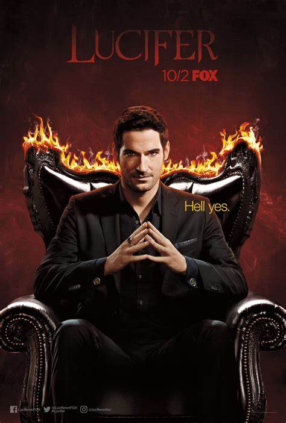
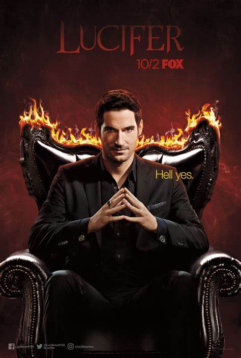

Es una serie de televisión estadounidense desarrollada por Tom Kapinos que se estrenó en Estados Unidos en Fox el 25 de enero de 2016.Se basa en el personaje de DC Comics creado por Neil Gaiman, Sam Kieth y Mike Dringenberg tomado de la serie de cómics The Sandman, quien más tarde se convirtió en el protagonista de una serie de cómics derivada, ambos publicados por la imprenta Vertigo de DC Comics. La serie es producida por Jerry Bruckheimer Television, DC Entertainment y Warner Bros. Television. La serie gira en torno a Lucifer Morningstar (Tom Ellis), el Diablo, que abandona el Infierno por Los Ángeles, donde dirige su propio club nocturno y se convierte en consultor del LAPD. El elenco principal y secundario incluye a Lauren German como la detective Chloe Decker, Kevin Alejandro como el detective Daniel «Dan» Espinoza, D. B. Woodside como Amenadiel, Lesley-Ann Brandt como Mazikeen, Rachael Harris como la Dra. Linda Martin; además de Aimee Garcia como Ella Lopez y Tricia Helfer como la Diosa y Charlotte Richards (a partir de la temporada 2). La filmación tuvo lugar principalmente en Vancouver, Columbia Británica, antes de que la producción se trasladara por completo a Los Ángeles, California, a partir de la tercera temporada
Aunque el piloto se filmó en Los Ángeles, California, el resto de la primera temporada y la totalidad de la segunda se filmaron en Vancouver, Columbia Británica, con algunas filmaciones exteriores en Los Ángeles. La producción se trasladó a California a partir de la tercera temporada,aprovechando los incentivos fiscales proporcionados por la Comisión de Cine de California (California Film Commission) bajo su iniciativa «Programa 2.0»y gastando USD $92,1 millones en producción.La cuarta temporada también fue filmada en Los Ángeles, así como en el estudio en Burbank de Warner Bros.,gastando USD $35,8 millones en producción
.jpg)
.jpg)
.jpg) 

Juan Diego 07/11/2022